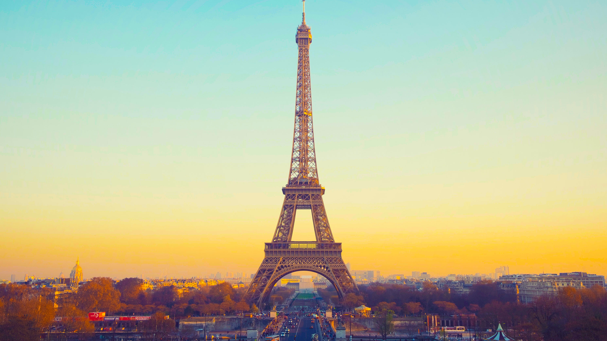

Địa điểm nổi bật
Cầu Cổng Vàng

Đây là một trong những cây cầu nổi tiếng
nhất trên thế giới, được xây dựng từ thép
và có màu đỏ cổ điển.Nó đẹp nhất là khoảng
khắc được ánh sáng mặt trời chiếu vào.
Tháp Eiffel

Tháp Eiffel, biểu tượng của Paris và Pháp,
là một kiệt tác kiến trúc được xây dựng vào
năm 1889. Với vẻ đẹp lộng lẫy và sức hút
vô cùng mạnh mẽ.
Cầu Vàng

Cầu Vàng ở Đà Nẵng là biểu tượng nổi
bật của du lịch Việt Nam với cấu trúc
độc đáo và vẻ đẹp tuyệt vời, thu hút
du khách khắp nơi trên thế giới.